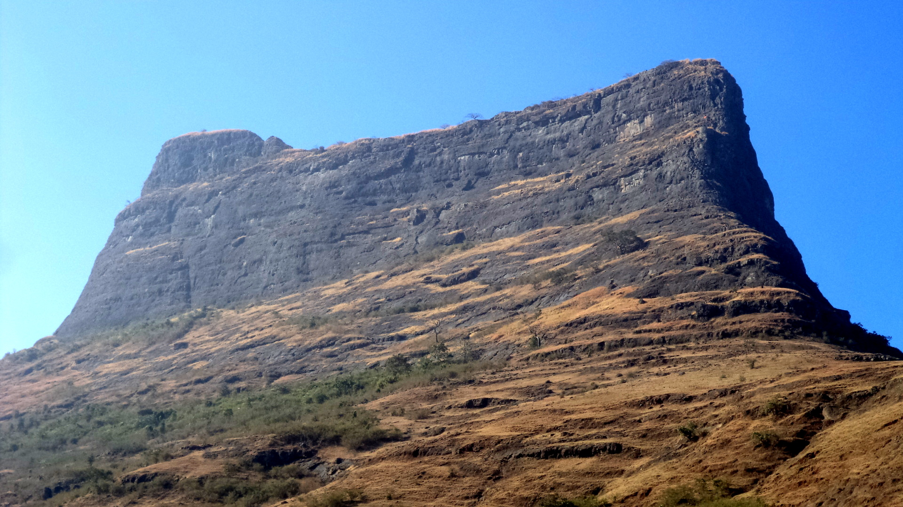
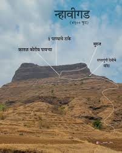

नव्हीगड किल्ला
Location : Click Here For Google Map
- माहिती
- नव्हीगड किल्ला महाराष्ट्र राज्याच्या रायगड जिल्ह्यात स्थित एक छोटा आणि ऐतिहासिक किल्ला आहे. हा किल्ला मुख्यतः ट्रेकर्स आणि इतिहासप्रेमींमध्ये प्रसिद्ध आहे. नावाच्या अर्थावरून हा किल्ला "नव्ही" (पाणी) आणि "गड" (किल्ला) या शब्दांपासून उचलला गेला असावा, कारण किल्ल्याच्या जवळ एक पाण्याचे झऱ्याचे ठिकाण आहे.
नव्हीगड किल्ल्याचा इतिहास अत्यंत प्राचीन असून, तो किल्ला मराठा साम्राज्याच्या काळात महत्त्वाचा ठरला. किल्ल्याच्या ठिकाणापासून आसपासच्या परिसराचे उत्कृष्ट दृश्य दिसते, त्यामुळे किल्ल्याच्या शिखरावर चढून एक अद्वितीय निसर्गसौंदर्य आणि इतिहासाची अनुभूती मिळवता येते.
किल्ल्याची रचना साधारणत: ओले किल्ल्याच्या प्रकारची आहे, ज्यामध्ये तटबंदी, काही अवशेष, वॉटर टँक आणि एक साधे गड आहे. किल्ल्याच्या शिखरावर चढायला थोडा अवघड आणि खडकाळ रस्ता आहे, त्यामुळे ट्रेकर्ससाठी हा एक आव्हानात्मक अनुभव ठरतो.
आजकाल, नाव्हीगड किल्ला एक शांत आणि सुंदर ट्रेकिंग स्थळ बनले आहे. येथील नैसर्गिक सौंदर्य, शांती आणि किल्ल्याच्या अवशेषांमुळे पर्यटक आणि साहसी लोकांसाठी एक आदर्श ठिकाण आहे.
Explore the historical beauty

